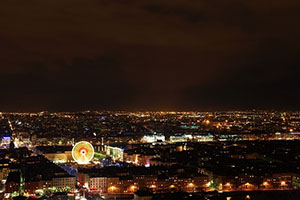
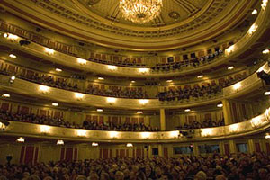
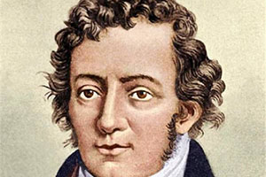

高清美图
特写
下拉查看更多相关图片
旅游美图

文化之城
City of Culture里昂被称为“文化之城”。在全欧洲，除了威尼斯，里昂是拥有印刷工人数量最多的城市，在这里的印刷厂里印出了第一本法语书。这里特别值得记住的是法国文艺复兴时期作家、文人主义者弗朗西斯·拉伯雷，他从蒙波利埃大学毕业后成为名医，1532年开始发表作品，他的《巨人传》就是在里昂离他工作的医院不远的住所完成的。同时，里昂还有艺术家和作家踊跃参加的文化沙龙，他们对传播新的文艺思想和理论作出了重要的贡献。
壁画之都
The City Of Frescoes里昂有几百幅壁画，有的描写里昂的历史，有的记录城市生活，其中大型的就有40多幅。在十字架—鲁斯街口，有一幅面积为1200平方米的《卡尼》壁画，据说是目前欧洲最大的城市壁画。它描绘了卡尼街区过去的人物和活动场景。索恩河畔一幢7层老式楼房的墙面上，有一幅800平方米的壁画，叫做《里昂人》。壁画描绘的是里昂历史上的著名人物，包括宗教人士、科学家、艺术家等，共有20多位。其他大大小小的壁画，描述的内容还有书店、建筑、商店橱窗等等，这些形形色色的壁画，使得里昂成为了名副其实的“壁画之都”。

发明之乡
The hometown of inventions里昂历史上出过许多发明家、科学家。蒙哥尔费兄弟就在里昂附近研制出了世界上第一个热空气气球。里昂还是缝纫机发明家蒂莫尼耶的故乡。他于1829年发明的缝纫机是世界上最早成批制造的缝纫机。物理学家安培也是里昂人。1870年，卢米埃尔兄弟随父母从贝桑松迁到里昂，长大后便在其父开设的小工场制造照相用的干底板，就这样兄弟俩开始了他们的事业，孜孜不倦的发明创造，终于为我们这个世界增添了一门新的艺术——电影。
美食之都
The capital of food昂于2012年被评选为“法国美食之都”。里昂的美食种类多样，较为流行的里昂特色食品包括里昂干红肠（Saucisse lyonnais）、里昂内脏肠（Saussison）、高汤小鸡蘑菇（Deuil）、里昂沙拉（Salade lyonnais）、猪脚（Le pied de cochon）、里昂鱼酱丸（Quenelles Lyonnais）、里昂奶酪（Fromage）等。其中里昂奶酪的种类数量超过100种，除了直接切片来吃，还可将融化的奶酪加入酒混合，也可以搭配冷肉、马铃薯等，是补充体力的上品。此外，里昂南部的罗讷河谷（Val du Rhône）和北侧的博若莱（Beaujolais）均为法国十大葡萄酒产区之一。
国际博览会
Foire internationale每年4月中旬，里昂都要举行规模盛大的国际博览会（foire internationale），这个博览会的历史比里昂丝织业还要悠久。早在1420年，里昂就第一次摆开货摊，广招天下客商，进行交易。中世纪末，法兰西国王利用意大利的分裂，热情欢迎来自佛罗伦萨等地的流亡者前往里昂博览会，这其中包括了不少金融和商贸方面的行家。此后，里昂的博览会越办越红火，直到19世纪，繁荣依旧。可是在1882年时，博览会因故停办，直到1916年世界大战时，才由当时任里昂市长的赫里欧出面恢复了此地富有传统的贸易博览会。
里昂灯光节
Festival of Lights据史料记载，真正的“灯光节”的由来更具传奇色彩。1852年，里昂人重建大教堂的钟楼，并重塑圣母玛利亚的镀金铜像。原计划在当年9月8日即圣母诞生日举行纪念活动，但是索恩河突然涨水，纪念活动不得不推迟到12月8日。孰知12月8日上午，里昂下了一场特大暴雨。正当大主教准备宣布再次推迟纪念活动、里昂人也变得垂头丧气时，大雨在傍晚时分终于停下来，天空完全放晴。兴奋的人们纷纷在窗前点起蜡烛，并走上街头载歌载舞。满城的烛光直到次日天明才渐渐熄灭。自此，12月8日就正式定为“灯光节”的开始日，并最终演变成一个世界著名的节日。
文化之城
City of Culture里昂被称为“文化之城”。在全欧洲，除了威尼斯，里昂是拥有印刷工人数量最多的城市，在这里的印刷厂里印出了第一本法语书。这里特别值得记住的是法国文艺复兴时期作家、文人主义者弗朗西斯·拉伯雷，他从蒙波利埃大学毕业后成为名医，1532年开始发表作品，他的《巨人传》就是在里昂离他工作的医院不远的住所完成的。同时，里昂还有艺术家和作家踊跃参加的文化沙龙，他们对传播新的文艺思想和理论作出了重要的贡献。
发明之乡
The hometown of inventions里昂历史上出过许多发明家、科学家。蒙哥尔费兄弟就在里昂附近研制出了世界上第一个热空气气球。里昂还是缝纫机发明家蒂莫尼耶的故乡。他于1829年发明的缝纫机是世界上最早成批制造的缝纫机。物理学家安培也是里昂人。1870年，卢米埃尔兄弟随父母从贝桑松迁到里昂，长大后便在其父开设的小工场制造照相用的干底板，就这样兄弟俩开始了他们的事业，孜孜不倦的发明创造，终于为我们这个世界增添了一门新的艺术——电影。
壁画之都
The City Of Frescoes里昂有几百幅壁画，有的描写里昂的历史，有的记录城市生活，其中大型的就有40多幅。在十字架—鲁斯街口，有一幅面积为1200平方米的《卡尼》壁画，据说是目前欧洲最大的城市壁画。它描绘了卡尼街区过去的人物和活动场景。索恩河畔一幢7层老式楼房的墙面上，有一幅800平方米的壁画，叫做《里昂人》。壁画描绘的是里昂历史上的著名人物，包括宗教人士、科学家、艺术家等，共有20多位。其他大大小小的壁画，描述的内容还有书店、建筑、商店橱窗等等，这些形形色色的壁画，使得里昂成为了名副其实的“壁画之都”。
图片
更新
点击查看大图
收藏网址看最新美图


{kind=link}
{kind=link}
{kind=link}
景点
相关
里昂相关
了解更多关于里昂
-

Lyon's History
early stage里昂是法国最古老的城市之一，其城市的形成可溯源至前6世纪。因其位于两条河流（索恩河和罗讷河）交汇处的地理位置，水上运输方便，为里昂的早期发展提供了条件。根据里昂西部的富维耶山高卢城遗址的发掘信息，部分历史学家推断，里昂可能为当时的高卢人（Gaulois）的首府，其人口数量甚至可能一度超过20万。前43年，恺撒的代表吕西·姆那提尤斯·普朗库（Lucius Munatius Plancus）占领了里昂，建立了卢格杜努姆（Lugdunum），这也是现代里昂城市的前身。但由于战乱，此后近1000年间里昂的地位不断衰落，直到中世纪中期才逐渐恢复。
-
Lyon's History
The medieval times470-534年间，里昂曾为勃艮第王国（Royaume de Bourgogne）的都城。843年，根据《凡尔登条约》，里昂乃成为了中法兰克王国一部分。一直至十四世纪，里昂才开始由法兰西王国控制。11世纪，伴随着罗讷-索恩河航道的开辟，里昂出现了规模宏大的商业集市，主要包括商品包括东方丝绸、香料、珠宝以及食品等。13世纪，里昂成为了成为欧洲重要的宗教中心之一。14世纪，里昂行省（Lyonnais）成立，里昂成为这一地区的法定行政中心。15-16世纪，纺织、皮革、印刷、金属加工等工业发展。随着文艺复兴，意大利商人影响力传到法国，里昂经济在15世纪后期，开始有明显的增长。当国际银行从阿姆斯特丹移到热那亚时，里昂更成为法国的银行中心。文艺复兴期间，里昂的丝绸贸易发展迅速。
-

Lyon's History
Since the industrial revolution18世纪开始，里昂逐渐成为工业城市，市区人口数量达到了10万。工业革命时期，里昂地区发展迅速，成为铁路交通和金融中心，丝织业兴盛。以后又逐渐发展化工、机器制造、电机、人造纤维、染料等部门。20世纪30年代以来，里昂郊区扩展迅速，维勒班（Villeurbanne）、韦尼雪（Vénissieux）等重要卫星城镇开始大规模发展，并逐渐与里昂市区连为一体。1956年，法国成立了新的一级行政区划——大区（Région），里昂成为了罗讷-阿尔卑斯大区的首府。该大区共包括7个省，总人口为363万（1954年数据）。1969年，包括里昂在内共有56个市镇建立了“里昂城市共同体”。1998年12月5日，里昂被联合国教科文组织列为世界人文遗产城市。2015年，罗讷-阿尔卑斯大区与相邻的奥弗涅大区合并，成立新的奥弗涅-罗讷-阿尔卑斯大区，里昂仍为首府。
-

Pop.and Population
Population2013年，里昂市镇范围内（Commune de Lyon）的人口数量为509233人，其中外来人口8518人，本地人口为500715人。2014年，里昂大都会（共包括59个市镇）的总人口数量为1281971人。
-

Pop.and nationality
Population由于法国国家统计局（INSEE）没有对“民族”一项进行过官方统计，故而以下数据资料仅供参考：里昂市区内的法国人占85%以上，此外也有一些瑞士人、意大利人和德国人。非欧洲裔移民主要来自于非洲，主要包括科特迪瓦、加纳、塞内加尔、摩洛哥和毛里塔尼亚。此外，里昂地区发达的教育资源也吸引了不少外国留学生，他们主要中国、马里、日本、阿尔及利亚等国。里昂作为一座国际化的城市，市内各种宗教种类较多，天主教教堂、基督教教堂、清真寺和犹太教堂等在里昂市区均有分布。
-

Pop.and nationality
Terrain里昂位于法国中央高原（Massif Central）、东布平原（Dombes）和下多芬内平原（Bas-Dauphiné）的交汇处，地形较为多样。市区内大致被罗讷河和索恩河分为三大部分：西侧为山地，起伏明显，平均海拔在250米左右，最高处超过了300米；中部为“老里昂”（Vieux Lyon），位于两河之间，呈南北狭长型分布，地形平坦，海拔在170米左右，是里昂的历史文化街区；东部则为里昂平原（Plaine de Lyon），地形平坦，地势较为开阔，适合于城市开发和建设。
-

Scenic spot
Théâtre de Lyon里昂国家歌剧院位于市政厅东侧，其前身建于1831年，后来在1993年翻新建成了一座现代化的剧院。它的玻璃弧形拱顶很有特色。它是一个六层的、由玻璃和钢铁构成的半圆柱形建筑，与以大理石为饰的古老歌剧院和谐地成为一个整体，它如同一个极其现代化的庞大背景，将剧院上方的雕塑衬得愈加醒目。夜晚，这座新建筑点燃一片红灯，被里昂人亲切地称为“面包烤炉”，这六层建筑的完成使歌剧院的面积增长了三倍，是用来供彩排和演艺人员日常排练的场所。同时，建筑师还在歌剧院的底层挖掘和建筑另外五处为主建筑服务的场地。
-

Scenic spot
Musée de la civilisation gallo-romaine高卢-罗马文化博物馆位于富维耶山上，依山势而建 [32] 。这里展出了罗纳河谷考古发现的艺术品和文物，包括约公元前700年的四轮战车残骸以及许多华丽的镶嵌艺术品。入口处设在五楼，每经一朝代，便下一层楼。一路蜿蜒下来，便走过了历史的长河。镇馆之宝是1528年发现的克劳狄青铜板，上面铭刻着罗马皇帝克劳狄一世公元48年在元老院的演说。还可以欣赏到许多艺术品，例如战车车轮或青铜海神塑像。从窗户望出去是两座罗马露天剧场，恰似中国园林的借景手法，使人恍如置身于罗马时代。两千年前的里昂即以这一大一小两座剧场为中心，周围有城墙围绕，是一座山丘上的都市。气吞山河的凯撒大帝就是以这里作为征服高卢的基地。现在附近街道已无当时的景况，只能在罗马剧场遗迹上缅怀过去的光荣。博物馆南边是始建于公元前15年的罗马剧场和小剧场。
-

Scenic spot
Vieux Lyon里昂老城（Vieux Lyon）主要位于索恩河与罗讷河所交汇的狭长型半岛上，同时也包括索恩河西岸的部分地区。里昂老城于1998年被评为世界文化遗产，是中世纪与文艺复兴结合的作品。里昂老城保存着许多15到17世纪的古色苍然旧宅居，橙红色调鲜艳醒目。沿着狭窄的街巷信步走去，许多哥特式、文艺复兴式及古典式的房屋彼此相连，几百年前的建筑物和一带凝重的空气混合起来，令人感受到浓厚的古老气氛，仿佛置身于中世纪。同时里昂老城内也有众多的历史文化遗产。
-
Celebrity
Francois Perroux弗朗索瓦·佩鲁（Francois Perroux 1903.12.19 – 1987.06.02) 法国经济学家，教授。生于1903年12月19日。曾任教于法国里昂大学、巴黎大学。1982年佩鲁提出“新发展观”，认为社会要维持可持续发展。1987年6月2日佩鲁在法国巴黎去世，享年84岁。1955年，佩鲁提出“发展极”理论。
-

Celebrity
Girard Desargues吉拉德·笛沙格(Girard Desargues，1591年2月21日生于法国里昂，3月2日受洗，1661年10月卒于里昂），法国数学家和工程师，别名S.G.D.L. ，他署名Sieur Girard Desargues Lyonnois的缩写。射影几何的创始人之一，他奠定了射影几何的基础。
-

Celebrity
André-MarieAmpère安德烈-马里·安培 (1775-1836)出生 1775年1月20日(1775-01-20) 出生地 Poleymieux, 里昂, 法国 逝世 1836年6月10日 （61岁） 逝世地 法国 马赛 研究领域 物理学 著名成就 安培定律 国籍 法国 居住地 法国 信仰 罗马天主教
Contact
Happy
为了您更好的体验，我们将不断更新进步！
填写您的意见与建议我们将仔细阅读并回复！